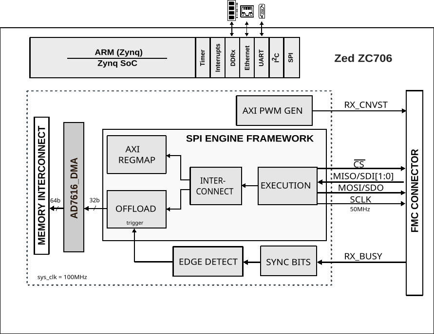
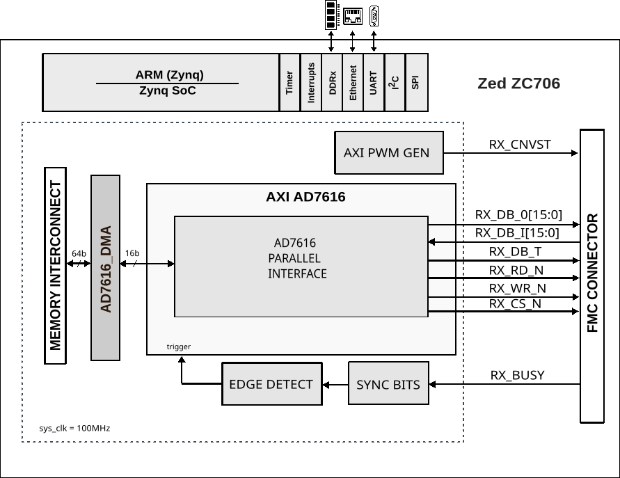

User guide
Block diagrams
The AD7616 supports two interface modes. The block diagram varies depending on the selected interface.
AD7616-SDZ using the SERIAL interface:
{kind=link}

AD7616-SDZ using the PARALLEL interface:
{kind=link}

HDL reference design
An in-depth presentation and instructions about the HDL design can be found in
the HDL User Guide. For a detailed description
of the axi_ad7616 core, refer to its documentation page.
Data path
The HDL data path is structured as follows:
The parallel interface is controlled by the
axi_ad7616IP core.The serial interface is controlled by the SPI Engine Framework.
Data is written into memory by a DMA (
axi_dmaccore).All control pins of the device are driven by GPIOs.
Switching between interface types
Before powering up the board, choose the required interface and configure the hardware jumpers as described in the quickstart guide for your carrier. Then build the HDL project with the matching parameter:
Serial interface:
$ make SER_PAR_N=1
Parallel interface:
$ make SER_PAR_N=0
CPU/memory interconnect addresses
Instance |
Address |
|---|---|
axi_ad7616_dma |
0x44A30000 |
ad7616_pwm_gen |
0x44B00000 |
spi_ad7616_axi_regmap |
0x44A00000 |
axi_ad7616 |
0x44A80000 |
Note
spi_ad7616_axi_regmapis instantiated only whenSER_PAR_N=1axi_ad7616is instantiated only whenSER_PAR_N=0
PL interrupts
PS7 EMIO offset = 54
Instance |
HDL interrupt |
PS7 interrupt |
|---|---|---|
— |
0 |
89 |
— |
1 |
90 |
— |
2 |
91 |
— |
3 |
92 |
— |
4 |
93 |
— |
5 |
94 |
— |
6 |
95 |
— |
7 |
96 |
— |
8 |
104 |
— |
9 |
105 |
axi_ad7616 |
10 |
106 |
— |
11 |
107 |
spi_ad7616 |
12 |
108 |
axi_ad7616_dma |
13 |
109 |
— |
14 |
110 |
— |
15 |
111 |
Note
spi_ad7616is instantiated only whenSER_PAR_N=1axi_ad7616is instantiated only whenSER_PAR_N=0
GPIO signals
PS7 EMIO offset = 54
GPIO signal |
GPIO number |
HDL GPIO number |
|---|---|---|
adc_reset_n |
97 |
43 |
adc_hw_rngsel |
96–95 |
42–41 |
adc_os |
94–92 |
40–38 |
adc_seq_en |
91 |
37 |
adc_burst |
90 |
36 |
adc_chsel |
89–87 |
35–33 |
adc_crcen |
86 |
32 |